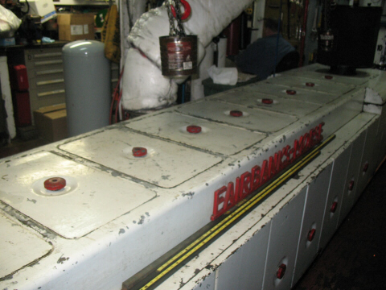

R/V John N Cobb
{kind=link}
| Model #: | 31A8 1/2 | Engine #: | |
| Bore & Stroke: | 8 1/2" x 11 1/2" | Cylinders: | eight |
| Horsepower: | 440 | RPM: | 525 |
| Current Owner: | Seattle Maritime Academy |
| Current Location: | Seattle, Washington |
| Current Condition: | broken crankshaft |
Engine History
The NOAA (National Oceanic and Atmospheric Administration) research vessel John N Cobb is powered by a six-cylinder Fairbanks-Morse diesel engine. The boat, styled after a Pacific Trawler, originally conducted fisheries research in Southeast Alaska every summer as part of NOAA's mission to conserve and manage coastal and marine resources.
In June 2008, the Cobb's Fairbanks-Morse diesel broke its crankshaft, resulting in the ultimate de-commissioning of the vessel. It has since been added to the National Register of Historic places and donated to the Seattle Maritime Academy as a training vessel.
External Links
NOAA's John N Cobb page
John N Cobb Wikipedia entry
Photos of the John N Cobb's FM diesel on Flicker
Blog entries about the John N Cobb on WordPress